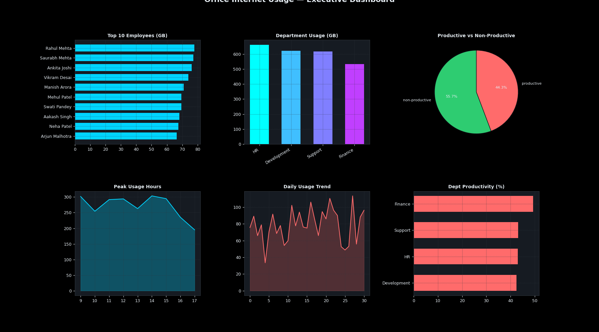
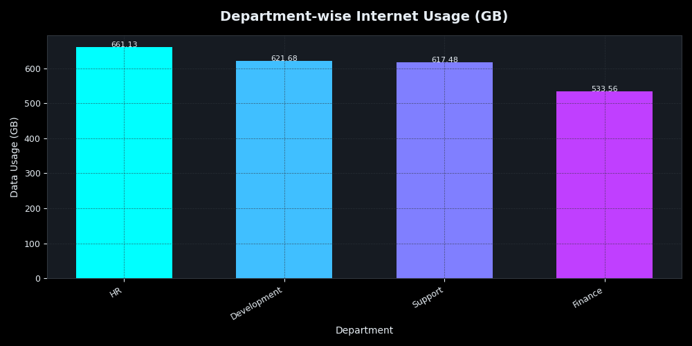
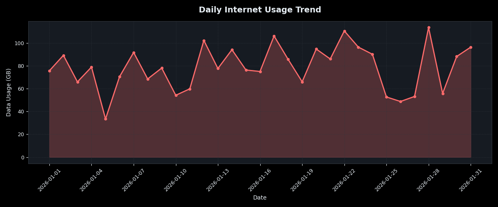
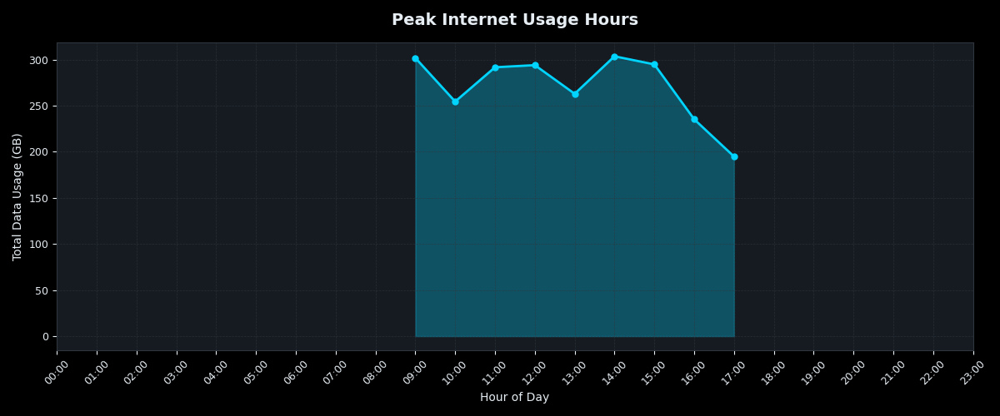
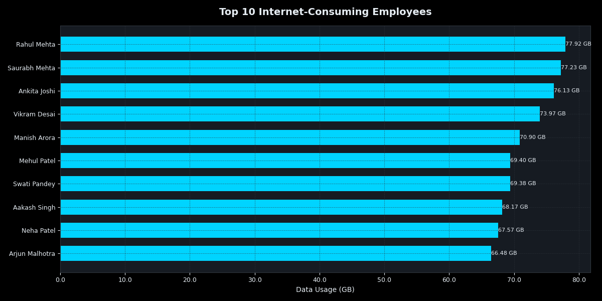
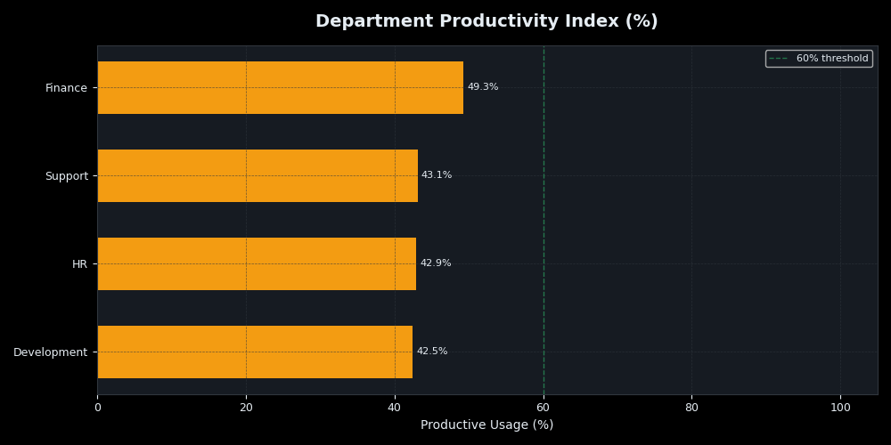

A desktop analytics tool that tracks, analyses, and visualises internet usage patterns across departments — with real-time charts, productivity scoring, and automated executive reports.
A Python desktop application for enterprise internet usage monitoring — tracking which departments consume the most bandwidth, identifying peak usage hours, flagging non-productive browsing, and generating executive summary reports.
The tool reads usage logs, processes them with Pandas, and renders interactive visualisation charts via Matplotlib — all within a clean Tkinter GUI.
Gives IT and management complete visibility into internet consumption without expensive enterprise tools. The productivity score helps identify departments with high non-productive browsing — enabling focused policy interventions.





